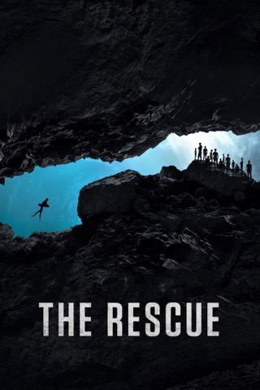

About the film

E. Chai Vasarhelyi, Jimmy Chin
The Rescue
chronicles the enthralling, against-all-odds story that transfixed the world in 2018: the daring rescue of twelve boys and their coach from deep inside a flooded cave in Northern Thailand. Academy Award®-winning directors and producers E. Chai Vasarhelyi and Jimmy Chin keep viewers on the edge of their seats as they use a wealth of never-before-seen material and exclusive interviews to piece together the high stakes mission, highlighting the efforts of the Royal Thai Navy SEALs and US Special Forces and details the expert cave divers' audacious venture to dive the boys to safety.
The Rescue
brings alive one of the most perilous and extraordinary rescues in modern times, shining a light on the high-risk world of cave diving, the astounding courage and compassion of the rescuers, and the shared humanity of the international community that united to save the boys.
Elizabeth Chai Vasarhelyi
Jimmy Chin
Brian Bennett
At the festival
- 2021 Centerpiece
More films on these topics
- Short Strand: Against the GrainSteven Leckart, Maia Wikler2026
- An Unknown SubstanceSteven Leckart2026 · 39 min
 Killing AnnaSam Benstead2026 · 76 min
Killing AnnaSam Benstead2026 · 76 min Rehearsals for a RevolutionPegah Ahangarani2026 · 95 min
Rehearsals for a RevolutionPegah Ahangarani2026 · 95 min Rhapsody on the Outlaw OceanIan Urbina2026 · 61 min
Rhapsody on the Outlaw OceanIan Urbina2026 · 61 min- Short Strand: Minneapolis: On the Record + A Special ScreeningLaura Poitras, Rachel Lauren Mueller, Annie Sundberg2026